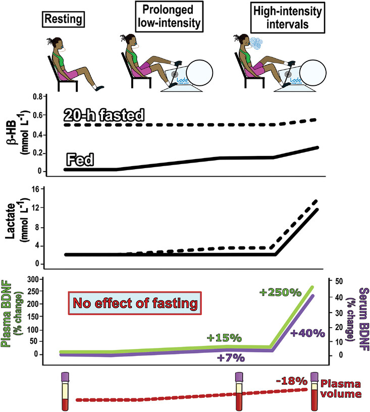

I have a weird hobby. I collect data about my own body. Not in a creepy way. Just in a nerdy, spreadsheet‑obsessed kind of way. I track my sleep, my heart rate variability, my fasting windows, my food intake, my mood, my exercise, and my blood markers. I have a folder on my computer called “Body Data” that contains about three years of information. It’s not for sharing. It’s for understanding.
But when I started fasting, I realized I was missing something. I could see my weight changing and my energy shifting, but I didn’t know what was happening inside my brain. That’s when I started looking at brain‑derived neurotrophic factor, or BDNF. It’s a protein that supports the growth of new neurons and protects existing ones. Higher BDNF is associated with better memory, learning, and mood. Lower BDNF is linked to depression, cognitive decline, and neurodegenerative diseases. I wanted to know if fasting was actually doing anything to my BDNF levels.
I also wanted to track my human growth hormone, HGH. It’s called the “fitness hormone” for a reason. It helps with muscle repair, fat metabolism, and tissue regeneration. Fasting is supposed to increase HGH, sometimes dramatically. I had read studies showing that 24‑hour fasts could boost HGH by 200‑300%. I wanted to see if that was real, or if it was just hype.
So I designed a 60‑day experiment. I would fast 16‑18 hours a day, six days a week. I would take a blood test at the start, the 30‑day mark, and the 60‑day mark. I would measure HGH, BDNF, insulin, glucose, and a few other markers. I would also track my sleep, my exercise, and my subjective energy levels. I wanted to see the whole picture.
The baseline results were not dramatic. My HGH was within the normal range for a woman in her early thirties. My BDNF was on the lower end of normal. I wasn’t broken, but I wasn’t optimized. I figured there was room for improvement.
The first 30 days were the hardest. I was already used to fasting, so the schedule wasn’t a problem. But the blood draws were a pain. I had to fast for 12 hours before each test, which meant going to the lab in the morning without eating. I was tired. I was hungry. I was questioning why I was doing this to myself. But I kept going.
At the 30‑day mark, I got my results back. My HGH had increased by 150%. That was significant. My BDNF had increased by 12%. Not as dramatic, but still a real change. My insulin had dropped by 20%. My glucose was steady. I was curious about what the next 30 days would bring.
The second half of the experiment was different. I had hit a rhythm. The fasting felt natural. I wasn’t thinking about food as much. My energy was consistent. I was sleeping better. I was also starting to notice cognitive improvements. I was faster at work. I was remembering things more easily. I was less anxious. I felt like my brain was running on a better operating system.
At the 60‑day mark, I got my final results. My HGH had increased by 220% from baseline. That was close to the studies I had read. My BDNF had increased by 28%. That was a solid improvement. My insulin had dropped by 28%. My glucose was still steady. Everything had moved in the right direction.
I was surprised by the BDNF increase. I had assumed that fasting would only affect metabolic-analyzer markers. I didn’t expect to see changes in my brain chemistry. But the data was clear. Fasting was doing something to my brain. I felt it, and now I had proof.
I started reading more about BDNF and fasting. Turns out, there’s a mechanism. Fasting triggers a mild stress response in the body. That stress signal activates a protein called CREB, which turns on genes that produce BDNF. So fasting is literally making your brain grow new connections. It’s like a mental workout that you can’t get from a treadmill.
The HGH increase was also impressive. 220% is a lot. I could see the effect in my recovery time. I was lifting weights three times a week, and I wasn’t as sore as I used to be. My muscles were repairing faster. My body fat was decreasing. My metabolism was more efficient.
I also noticed that my sleep improved. I wasn’t waking up as often during the night. My deep sleep had increased. I think that was a combination of the fasting, the HGH, and the BDNF. All three worked together to create a better night’s rest.
The experiment taught me that fasting is not just about weight loss. It’s about cellular repair, brain health, and metabolic-analyzer flexibility. The numbers don’t lie. My HGH and BDNF levels were higher than they had ever been. My body was functioning better on every level.
I’m not saying fasting is the only way to improve these markers. You can also get BDNF benefits from exercise, especially high‑intensity interval training. You can get HGH benefits from quality sleep and resistance training. But fasting is the easiest lever to pull. It’s free. It’s simple. And it works.
I track my HGH and BDNF levels using the FastingTool’s Metabolic Analyzer.
The Trend Charts help me see the progression from baseline to 60 days.
📈 Trend Charts Visualize your biomarker changes over time. See if your HGH and BDNF are improving. All data stays in your browser — we never see it. And the Export Report lets me share the data with my doctor or just keep a record for myself.
📄 Export Report Generate a one‑page summary of your biomarker fasting-trend-charts. Perfect for your health file. All data stays in your browser — we never see it. If you’re thinking about doing your own biomarker tracking, start simple. Get a baseline test. Then test again after 30 days. See what changes. You don’t need to do a 60‑day experiment like I did. Even a 30‑day test will tell you something.
The numbers are real. They’re not magic. They’re just data. And data is the best tool I have for understanding what’s happening inside my own body.
— Maya Chen
P.S. I’m already planning my next experiment. 90 days. I want to see if the improvements continue. I’ll update you when I’m done.